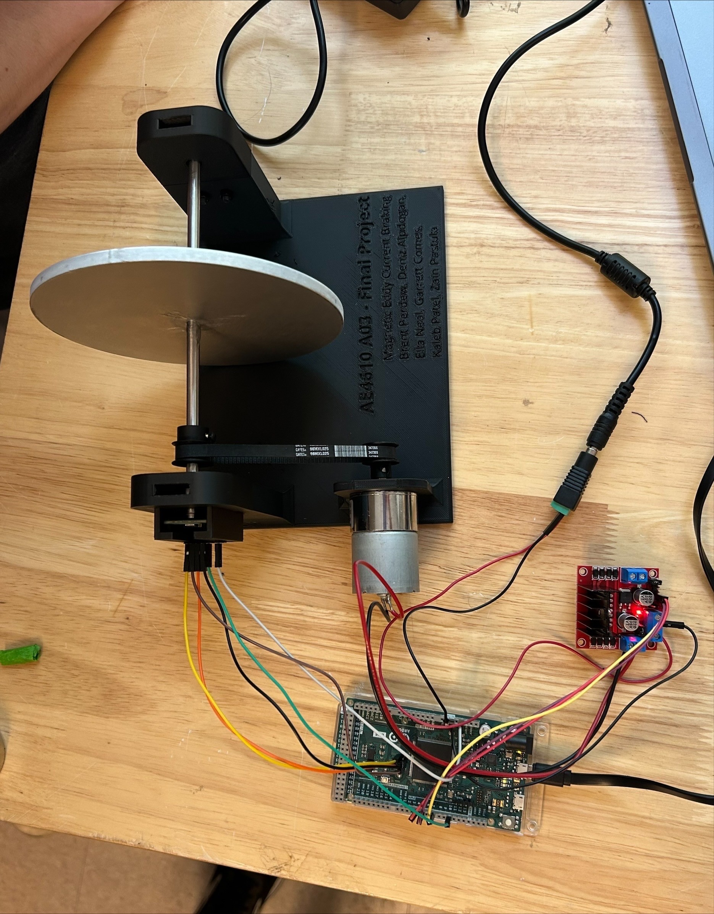
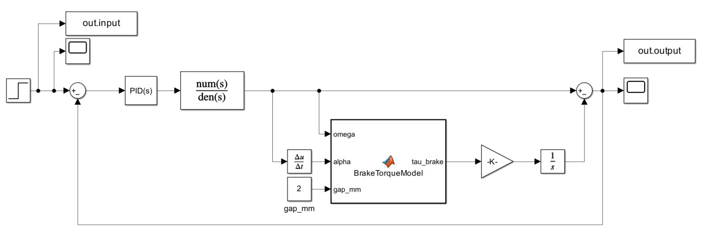
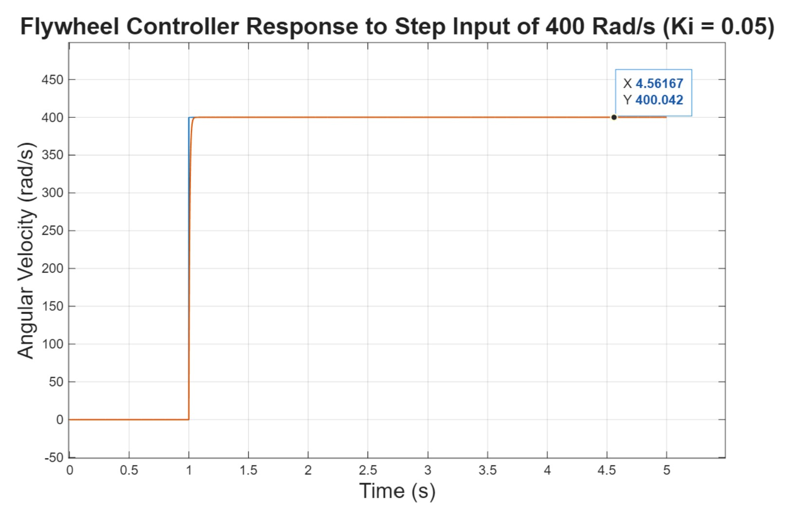

01 · Brief
Controlling flywheel speed with an electromagnetic braking disturbance.
This project studied speed regulation of a motor-driven flywheel subject to eddy current braking. The physical setup used a DC motor, aluminum flywheel, belt and pulley drivetrain, magnetic encoder feedback, and a permanent magnet that created a controllable braking disturbance.
The goal was to regulate wheel speed using a PI controller while comparing ideal simulation behavior against real hardware performance. The project tied together first-principles modeling, Simulink simulation, controller tuning, and experimental interpretation.

02 · Problem
The system behaved differently in simulation than it did in hardware.
In simulation, the flywheel can be approximated with a clean transfer function and tuned for a smooth response. In hardware, the response was affected by bearing friction, belt slip, pulley fit, motor limits, encoder noise, mechanical imbalance, and nonlinear braking behavior as magnet distance changed.
This made the project a practical controls problem rather than just a theoretical tuning exercise. The goal was not simply to tune gains for the best-looking simulation, but to choose a controller that could reject the magnetic braking disturbance while remaining stable and repeatable on physical hardware.
03 · Model
Building a physics-based representation of the flywheel dynamics.
I modeled the flywheel speed response by relating the motor input, rotational inertia, and braking torque to the angular velocity of the system. The simulation treated the eddy current brake as a disturbance acting against the wheel motion, which allowed the controller to be tested under changing braking conditions.
- Developed a simplified dynamics model for the rotating flywheel system.
- Performed system identification to estimate model behavior from experimental response data.
- Represented the eddy current brake as a disturbance that opposed wheel motion and varied with magnet interaction.
- Built Simulink simulations to compare open-loop response, closed-loop response, and gain sensitivity.
- Used simulation results to inform controller tuning before final hardware testing.

04 · Control
Using PI control to reduce steady-state error and stabilize the speed response.
The controller used proportional and integral feedback to regulate speed as the braking disturbance changed. The proportional term responded to speed error, while the integral term reduced steady-state error caused by the magnet-induced braking torque.
Simulation supported more aggressive integral action, but the hardware required more conservative tuning because the drivetrain and braking physics introduced losses and nonlinear behavior that were not fully captured in the simplified model.
The most important controls lesson was that a gain that looks clean in Simulink can be too aggressive on hardware when the real plant includes belt slip, noise, actuator limits, and unmodeled losses.
05 · Results
What the project produced.
- Created a working physics-based model of the eddy current braking system.
- Simulink simulations comparing open-loop behavior, PI tuning choices, and disturbance rejection.
- A PI controller that maintained flywheel speed under changing magnetic braking conditions.
- Validated response plots comparing desired and measured flywheel speed during hardware tests.
- Identification of practical hardware limits including belt slip, pulley fit, encoder noise, and unmodeled losses.
- A final report and poster connecting modeling, simulation, controller design, hardware implementation, and experimental evaluation.

06 · Takeaways
What I took away from the project.
This project strengthened my ability to move between modeling, simulation, and hardware validation. The model was valuable because it gave the team a starting point, but the real learning came from explaining why the hardware behaved differently.
It also reinforced that controls work is physical. A stable controller is not just a transfer function result. It has to account for sensors, actuators, drivetrain losses, noise, mechanical tolerances, and the limits of the real system.